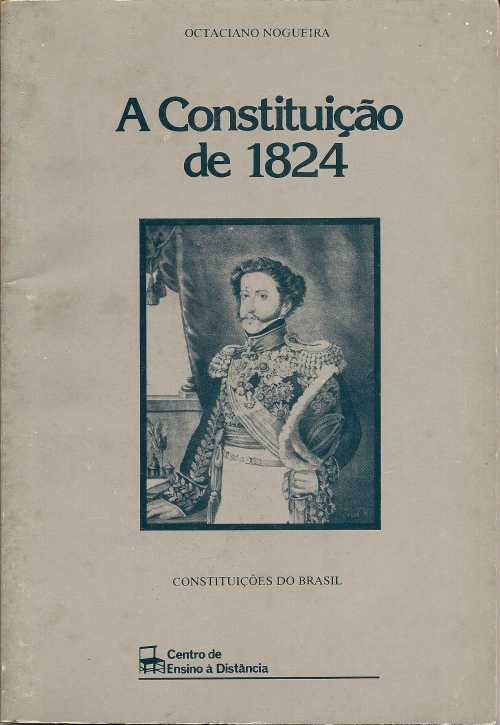
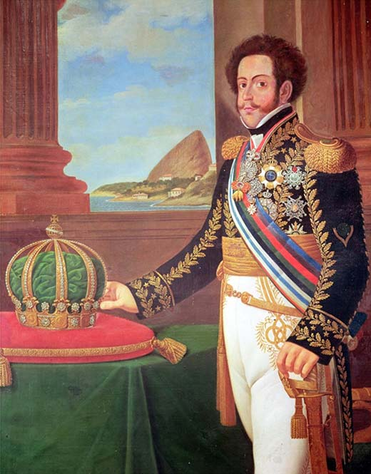

De colonia a imperio
Para começar essa historia nós temos que voltar um pouco para trás por volta dos anos 1790 um sujeito chamado Napoleão Bonaparte meteu o loco e
saiu na mão com toda a europa sendo seus maiores inimigos os ingleses, e como Portugal era um aliado da inglaterra o nosso menino Napoleão deu uma
surra nos portugueses, então no meio da noite foi uma correria, um bate perna e do nada toda a corte portuguesa tava no Brasil
Por um bom tempo o Brasil foi comandado pelo rei Dom João (pai de Dom Pedro I) que trouxe varias coisas pro Brasil como um banco impressor de
notas (o quarto do mundo) O Banco Do Brasil, além de ter anexado uma provincia espanhola chamada de provincia Cisplatina, mas enfim alguns anos
para frente Napoleão saiu da europa e o governo portugues chamou Dom João e a corte de volta para Portugal mas Dom João precisava de alguem para
cuidar da colonia e por isso deixou seu filho Pedro I no Brasil, alguns anos depois Pedro foi chamado para portugal tambem mas o povo gostava
dele e não queria que ele fosse com isso ocorreu o famoso "Dia do fico" onde pedro diz "Se é para o bem de todos e felicidade geral
da nação, estou pronto! Digam ao povo que fico", e em 7 de setembro de 1822 Dom Pedro I declarou a independenciado Brasil com
outro grito famoso "independencia ou morte" e assim começa um periodo chamado Primeiro reinado
Constituição da mandioca
O primeiro reinado começa em 1822 ápos o lendario grito de independencia nas margens do rio Ipiranga, no periodo inicial o Imperio passou por
uma guerra de independencia e uma crise já que Dom Pedro I e a nobreza não se gostavam muito, já que, em 1823 na hora de escrever a constituição
Pedro I chamou os nobrez para ajudarem e auxiliarem ele á escrever, mas, os nobrez queriam que o poder fosse deles e Pedro queria o poder com ele
e já que eles não chegaram a um concensso o imperador deu um pé na bunda deles e disse "deixa com o pai e confia na call" esse
acontecimento ficou conhecido como constituição da mandioca
Após esse episódio, uma nova Constituição começou a ser elaborada por uma comissão formada pelo imperador. Essa Constituição ficou pronta em
1824 e foi outorgada por ordem do imperador. nessa Constituição a imposição do voto censitário. Assim, só poderiam votar aqueles tivessem renda
anual acima de 100 mil réis que seria 100 reais hoje em dia O documento reafirmava que o Brasil seria uma monarquia e instituía ao imperador
poderes absolutos sobre a nação. Para isso, foi criado o Poder Moderador, representado exclusivamente por Dom Pedro I. Foi determinada também

Confederação do Equador e Guerra da Cisplatina
O Nordeste era uma das regiões mais insatisfeitas com o autoritarismo de Dom Pedro I, e a dissolução da Assembleia Constituinte gerou um
grande ressentimento na região a ponto da Câmara de Olinda anunciar que não reconheceria a Constituição de 1824. Além disso, houve
desentendimentos entre a elite pernambucana e o imperador a respeito da nomeação de um governador para a província,
Pernambuco era uma província historicamente marcada por rebeliões e agitação popular. O ressentimento com a forma que Dom João VI tinha lidado
com a Revolução Pernambucana de 1817 ainda estava vivo, e os desentendimentos com Dom Pedro I reacenderam a insatisfação dessa província,
O resultado foi que, em 2 de julho de 1824, teve início a Confederação do Equador, uma rebelião de caráter republicano que ganhou todo o
Nordeste. Liderada por Manoel de Carvalho Paes de Andrade e Frei Caneca, o levante espalhou-se pelo Rio Grande do Norte, Ceará, Paraíba, Piauí
e Maranhão. A violenta reação de Dom Pedro I fez com que os rebeldes fossem contidos e muito dos envolvidos fossem executados.
Um dos grandes erros estratégicos de Dom Pedro I foi o seu envolvimento em um conflito com as Províncias Unidas do Prata (atual Argentina)
pelo controle da Cisplatina — província mais ao sul do território brasileiro naquela época. O governo portenho incentivou uma rebelião,
liderada por Juan Antonio Lavalleja, contra o governo brasileiro, Brasil e Províncias Unidas entraram em guerra formalmente em dezembro de 1825
(embora a rebelião tenha sido iniciada em abril). A situação econômica brasileira não suportava o envolvimento do país em uma guerra, e o
resultado acabou não sendo o esperado pelo imperador. A Guerra da Cisplatina foi desastrosa para o Brasil e para a reputação de Dom Pedro I. O
Brasil acumulou derrotas no campo de batalha e sua situação econômica ficou ainda pior. O país precisou aceitar negociações com as Províncias
Unidas pelo fim da guerra. Desse acordo, ambos territórios concordaram, em 1828, em reconhecer a independência da Cisplatina sob o nome de
República Oriental do Uruguai.
Abdicação de Dom Pedro I
A derrota na Guerra da Cisplatina teve um impacto muito negativo na reputação de Dom Pedro. Seu estilo centralizador também criou muitos
problemas, e, quanto mais acuado ficava, mais ele se aproximava do partido português, seu defensor. Os ânimos já estavam exaltados quando um
crítico do imperador foi assassinado. Em 1830, o jornalista italiano Líbero Badaró foi assassinado nas ruas de São Paulo. Ele era um forte
crítico de Dom Pedro I e usava o seu jornal O Observador Constitucional para explicitar o autoritarismo do imperador. Em 20 de novembro de 1830,
Líbero Badaró foi morto na porta de sua casa, e boatos começaram a acusar o imperador de proteger o mandante do crime. A situação política era
tão tensa que defensores e apoiadores do imperador entraram em confronto físico nas ruas do Rio de Janeiro. Esses embates começaram em 11 de
março de 1831 e duraram até o dia 16, ficando conhecidos como Noite das Garrafadas. A situação política ficou muito ruim a partir daí, e
Dom Pedro I, acuado, abdicou do trono em nome de seu filho, no dia 7 de abril de 1831.
